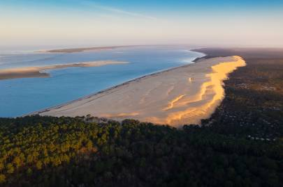

Dune du
Pilat


⟹ Grand Site de France ⟸
À l'entrée du bassin d'Arcachon, en Gironde, la Dune du Pilat est la plus haute dune de sable d'Europe. Son sable s'est accumulé depuis environ 4 000 ans, sous l'effet de périodes climatiques alternant sécheresse et humidité, formant un empilement de couches de sable et de forêts fossilisées, les paléosols, aujourd'hui visibles par endroits sur ses flancs.

Le relevé effectué en 1855 par l'ingénieur Legallais mesurait la dune à une cinquantaine de mètres de haut ; elle culmine aujourd'hui entre 100 et 115 mètres selon les années, un record qui en fait la plus haute dune du continent. Sous l'action constante du vent, elle avance vers l'intérieur des terres de un à cinq mètres par an, engloutissant peu à peu le massif forestier des Landes de Gascogne.
Dès 1943, l'État protège une première partie de la dune et de la forêt usagère de La Teste-de-Buch au titre des sites classés. Face à la surfréquentation et à la pression urbaine, ce classement est étendu en 1994 à près de 6 875 hectares, englobant l'ensemble du massif dunaire et forestier environnant.
Depuis 2007, un Syndicat mixte de gestion assure l'accueil du public et la préservation du site, membre du Réseau des Grands Sites de France aux côtés de sites comme les falaises d'Étretat ou le Puy de Dôme. Chaque année, l'Observatoire de la côte de Nouvelle-Aquitaine mesure précisément l'altitude de la dune, dont la crête, mobile, varie sensiblement d'une saison à l'autre.
Avec près de deux millions de visiteurs annuels, la Dune du Pilat est l'un des sites naturels les plus fréquentés de France, juste derrière la forêt de Fontainebleau et la baie du Mont-Saint-Michel.

Coucher de soleil : la fin de journée, lorsque la lumière rasante sculpte le relief du sable, est considérée comme le moment le plus photogénique pour découvrir la dune.
Approche en bateau : une traversée en pinasse traditionnelle depuis Arcachon ou le Cap Ferret permet de débarquer directement sur la plage, au pied de la dune.
Activités outdoor : parapente, surf des sables ou simple descente en courant dans le sable complètent l'expérience pour les visiteurs les plus sportifs.
Le Bassin d'Arcachon, tout proche, invite à prolonger l'escapade entre villages ostréicoles et stations balnéaires.
Arcachon station balnéaire réputée pour ses villas Belle Époque et ses quatre quartiers aux essences arborées distinctes.
Cap Ferret presqu'île préservée, célèbre pour son phare, ses cabanes ostréicoles et ses plages face à l'océan.
La Teste-de-Buch commune historique du bassin, point de départ de la visite, avec son port et son quartier ancien.
Villages ostréicoles du bassin le Canon, l'Herbe ou Andernos, réputés pour leurs cabanes colorées et leurs dégustations d'huîtres face à l'eau.